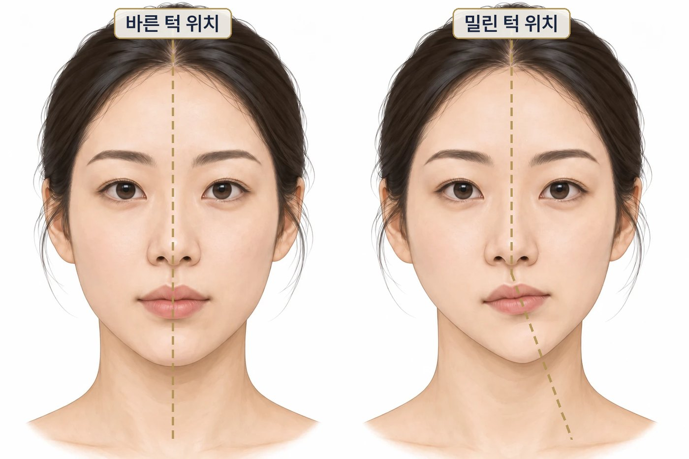
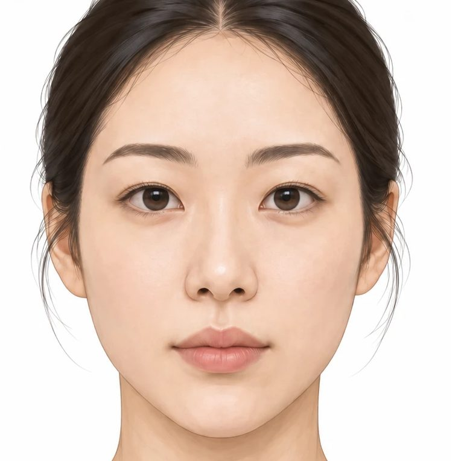
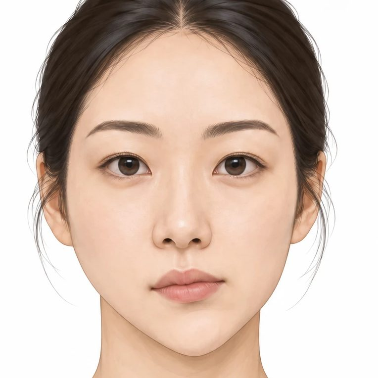

턱관절과 얼굴의 좌우
아래턱은 양쪽 턱관절에 매달린 뼈입니다. 한쪽 턱관절의 디스크가 제자리에서 밀려나 있으면, 그쪽 턱뼈가 짧고 턱끝이 그쪽으로 치우친 경우가 많습니다.
20세 미만을 조사한 연구에서 한쪽 디스크가 밀려난 사람의 72%에게 아래턱 비대칭이 있었습니다. 디스크가 정상인 사람은 26%였습니다. 디스크의 상태가 나쁠수록 비대칭도 컸습니다.1 성인에서도 디스크가 더 많이 밀려난 쪽으로 턱끝이 치우치는 경향이 있었습니다.2

함께 나타나는 양상
보기 좋은 얼굴도 좌우가 완전히 같지는 않습니다.3 비대칭과 함께 아래 신호가 있으면 턱관절을 확인합니다.
- ✓입을 벌릴 때 한쪽 턱에서 소리가 난다
- ✓한쪽 턱이나 귀 앞이 아프거나 뻐근하다
- ✓입을 벌릴 때 턱이 한쪽으로 꺾인다
- ✓한쪽으로만 씹게 된다
- ✓턱끝이 예전보다 더 돌아간 것 같다
턱이 치우친 사람은 치우친 쪽 턱관절에서 디스크의 이상이 더 자주 보였습니다.4
성장기의 진행
한쪽 디스크가 밀려난 청소년을 약 1년 지켜본 연구에서, 턱끝의 치우침이 평균 5.6mm에서 7.7mm로 커졌습니다. 나이가 어릴수록 더 많이 커졌습니다.5
얼굴이 틀어지는 과정
턱관절의 변화
한쪽 턱관절의 디스크가 밀려나거나 관절이 닳으면 그쪽 턱뼈의 높이가 낮아집니다. 아래턱 전체가 그쪽으로 기울고 턱끝이 따라갑니다.1, 6
틀어진 맞물림
다물었을 때 아래턱의 위치는 치아의 맞물림이 정합니다. 한쪽만 거꾸로 물리는 교합에서 턱뼈가 비대칭으로 자랐다는 연구가 많습니다.7
한쪽으로 씹는 습관
핀란드에서 748명의 얼굴을 입체로 촬영한 조사에서, 주로 씹는 쪽과 얼굴 비대칭은 관련이 없었습니다.8 맞물림이 불편한 쪽을 피하다가 한쪽으로만 씹게 되는 경우가 많습니다.


아래턱이 한쪽으로 밀린 위치
설명을 위한 그림입니다. 막대를 움직이면 턱의 위치가 바뀝니다.
치료의 방향
치료는 원인과 나이에 따라 달라집니다. 턱관절의 문제가 확인되면 장치(스플린트)로 아래턱의 위치를 잡고, 맞물림은 교정이나 보철로 바로잡습니다.
성장기에는 시기가 중요합니다. 성장기에 장치와 교정으로 치료한 뒤 좌우의 균형이 좋아졌고, 평균 12년 뒤에도 유지되었다는 보고가 있습니다.9 디스크를 제자리로 돌리는 치료를 받은 청소년은 치료하지 않은 청소년보다 비대칭이 줄었습니다.10
성인도 치료 뒤 비대칭이 많이 줄어듭니다. 좌우가 완전히 같아지지는 않습니다. 연구회의 치료 증례에서 확인한 내용입니다.
- ✓얼굴 사진과 방사선 사진으로 좌우 비교
- ✓턱관절의 소리와 통증, 입이 벌어지는 길 확인
- ✓위아래 치아의 맞물림과 중심선 확인
- ✓필요한 경우 CT와 MRI
참고문헌
- Xie Q, Yang C, He D, Cai X, Ma Z. Is mandibular asymmetry more frequent and severe with unilateral disc displacement? J Craniomaxillofac Surg. 2015;43(1):81–86.
- Choi HJ, Kim TW, Ahn SJ, Lee SJ, Donatelli RE. The relationship between temporomandibular joint disk displacement and mandibular asymmetry in skeletal Class III patients. Angle Orthod. 2011;81(4):624–631.
- Peck S, Peck L, Kataja M. Skeletal asymmetry in esthetically pleasing faces. Angle Orthod. 1991;61(1):43–48.
- Ooi K, Inoue N, Matsushita K, et al. Incidence of anterior disc displacement without reduction of the temporomandibular joint in patients with dentofacial deformity. Int J Oral Maxillofac Surg. 2018;47(4):505–510.
- Xie Q, Yang C, He D, et al. Will unilateral temporomandibular joint anterior disc displacement in teenagers lead to asymmetry of condyle and mandible? A longitudinal study. J Craniomaxillofac Surg. 2016;44(5):590–596.
- Westesson PL, Tallents RH, Katzberg RW, Guay JA. Radiographic assessment of asymmetry of the mandible. AJNR Am J Neuroradiol. 1994;15(5):991–999.
- Iodice G, Danzi G, Cimino R, Paduano S, Michelotti A. Association between posterior crossbite, skeletal, and muscle asymmetry: a systematic review. Eur J Orthod. 2016;38(6):638–651.
- Heikkinen EV, Vuollo V, Heikkinen T, Harila V. Chewing side preference, facial asymmetry and related factors in the Northern Finland Birth Cohort 1986. Acta Odontol Scand. 2024;83:500–506.
- Schmid W, Deregibus A, Mongini F. Conservative treatment of craniomandibular asymmetries during growth. A long term study. Prog Orthod. 2007;8(1):62–73.
- Liu Z, Xie Q, Yang C, Chen M, Bai G, Abdelrehem A. The effect of arthroscopic disc repositioning on facial growth in juvenile patients with unilateral anterior disc displacement. J Craniomaxillofac Surg. 2020;48(8):765–771.